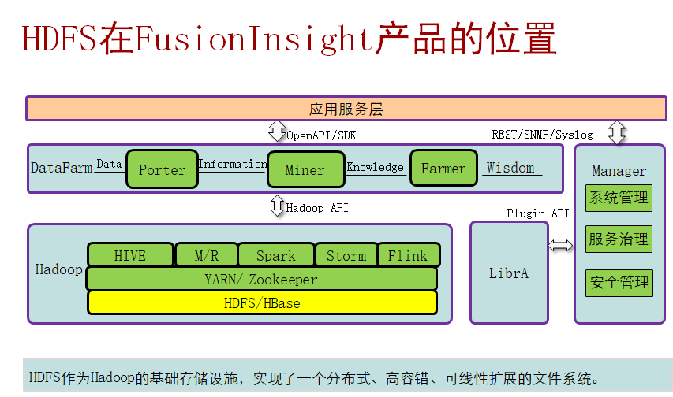

简介
Hadoop分布式文件系统（Hadoop Distributed File System）能提供高吞吐量的数据访问，适合大规模数据集方面的应用，为海量数据提供存储，提供类POSIX接口。（适合海量的，大文件流式数据访问，不适合小文件随机写入，低延迟读取）
特性（除了具备其他分布式文件系统特性外）：
- 高容错性：认为硬件不可靠
- 高吞吐量：为大量数据访问提供高吞吐量支持
- 大文件存储：支持存储TB-PB级别的数据
有两种方式会影响集群的整体可用性：
1、意外的突发事件，比如物理机器crash，集群将不可用，直到管理员重启Namenode。
2、系统维护，比如软件升级等，需要关闭Namenode，也会导致集群暂时性的失效。

基本系统架构
HDFS架构包含三个部分：NameNode，DataNode，Client。
- NameNode：NameNode用于存储、生成文件系统的元数据。运行一个实例。
- DataNode：DataNode用于存储实际的数据，将自己管理的数据块上报给NameNode ，运行多个实例。
- Client：支持业务访问HDFS，从NameNode ,DataNode获取数据返回给业务。多个实例，和业务一起运行。

图1 HA HDFS结构（高可靠性的示意图）

各个模块的功能：

HA---避免单点故障
Zookeeper（组件，协调者、仲裁者（心跳线））
（1）在分布式的集群中会部署zookeeper（zookeeper基本是选择奇数部署）
存在两个namenode，一个是active（主节点）、standy（备份节点） 如何选举----zookeeper在中间协调---使用复杂的目录进行协调
在集群启动的时候，两个namenode设备，会去 分子节点 去注册信息
如果 namenode-1 完成了信息写入，namenode-2 就不能进行写操作了（锁机制）
Namenode-2--->成为备用设备----->zookeeper会对其进行管理
为其设置监视器--ZKFC--->不断的给zookeeper发送 节点状态
一旦主节点出现故障，zookeeper会将 主节点的信息，从分子节点中删除，写入备节点信息--主节点
判断故障的机制
心跳（3s/次） 12没有接收到心跳信息
主节点和备用节点之间如何进行数据同步：
（1）平时 只有 主 namenode 提供服务
（2）namenode的备份方式为--->热备---->数据同步的问题----日志信息
（3）备用节点下载日志信息（日志文件 合并之后）
----满足下面的两个条件之一：文件大小到64M，累积写入1h
（4）备用节点，会整理日志信息，整理成索引（FSimage）的形式---存储到本地--->
（5）此时可能和 主节点间有时间差
（5.1）不发生故障，主节点和备节点 存在差异，没有关系
（5.2）发生故障，备节点会将 剩余日志 进行下载
元数据持久化机制


HDFS读流程

如图所示
（1）client向NM发起读请求，NN 返回 位置信息（所有的副本位置）
（2）客户端 去离自己最近的 并且 是 有效的节点上读取信息
（2.1）不读取
（2.2）去读取 离自己 次近的 节点信息
（2.3）反馈给NN节点 ---如果发现某个节点 信息 无效
HDFS写流程

（1）客户端要进行数据写入的操作，先去找namenode---要写入什么文件、大小、写入位置
（2）namenode 首先判断一下 对于 该目录是否有 写入权限
（2.1）如果没有写入权限，就拒绝写入
（2.2）如果有写入权限：namenode返回 可以写入 分布的数据块信息
（3）客户端 根据 分配的节点信息，进行第一个数据块的写入，目前在写入的时候 只写入第一个副本，剩余的其他副本，由节点之间直接进行 写入
第二个Datanode去找第一个DN
第三个DN 去找第二个DN
（4）确认阶段
第三个DN 去给 第二个DN回复ACK
第二个DN 去个第一个DN回复ACK
第一个DN 给 Clinet回复ACK，告诉client 第一个block写入完成
．．．．
（7）客户端收到 所有的 block 的ACK之后，告诉 namenode 写入完成
注：
客户端 会把block 分成 小的packet---64k
客户端包packet放到 data队列中，每次发生一个packet，就会从data队列中移除，
加入到ack队列 接收到ack之后，会从ack队列中 移除 相应的标记 data队列 和
ack队列 都没有数据的时候，就认为 数据写入完成
副本机制

数据存放到HDFS中，是分成块之后 才进行存储的
（1）RACK1的Node1---->0：client直接在node1上部署
（2）RACK1的node2----->2：clinet和node2在一个机架上，但是是不同设备
（3）RACK2的node1----->4：client和RACK3上的node4，在不同机架
需要存储三个副本
（1）理想情况下，第一个副本----保留在distance为0
（2）第二个副本---->保留在distance为4
（3）第三个副本---->保留在distance为2
（5）剩余的其他副本，随机存储
健壮性机制
主要保证数据的有效性
（1）重建失效盘的副本：namenode 会 向 失效的 datanode 发起重建的动作
如果DN的数据盘出现故障，就会出现少的block汇报信息--->检查不到磁盘信息 NM收到汇报信息之后，发现数据缺失---节点故障---NM会发起重建动作 如果缺少block7和block9
（1.1）NM会找block7和block9的副本，让副本服务器发起复制操作
（1.2）将数据 复制到 较为空闲+负载低的节点上
（2）集群数据负载均衡：数据在各个节点上均衡存放
（2.1）按照副本机制，本机架本节点、本机架其他节点
（2.2）会周期性的调用 负载均衡机制，强制集群里面的数据均匀存储
（3）数据有效性保证
从DN上读取数据的时候，DN会帮你进行校验的---CRC校验
（3.1）如果校验一致，直接读取
（3.2）校验不一致，从其他节点上读取数据
（4）元数据可靠性--FSimage
（5）安全模式--->自动进入安全模式（手工进入）
1.在数据节点、硬盘出现故障的时候，可以方式故障扩散
2.只能读取数据，不能写入数据
配置HDFS数据存储策略
- 默认情况下，HDFS NameNode自动选择DataNode保存数据的副本。在实际业务中，存在以下场景：
- DataNode上存在的不同的存储设备，数据需要选择一个合适的存储设备分级存储数据。
- DataNode不同目录中的数据重要程度不同，数据需要根据目录标签选择一个合适的DataNode节点保存。
- DataNode集群使用了异构服务器，关键数据需要保存在具有高度可靠性的节点组中。
配置HDFS数据存储策略 - 节点组存储

注：
- 配置DataNode使用节点组存储：
- 关键数据根据实际业务需要保存在具有高度可靠性的节点中，通过修改DataNode的存储策略，系统可以将数据强制保存在指定的节点组中。
- 使用约束：
- 第一份副本将从强制机架组（机架组2）中选出，如果在强制机架组中没有可用节点，则写入失败。
- 第二份副本将从本地客户端机器或机架组中的随机节点中（当客户端机器机架组不为强制机架组时）选出。
- 第三份副本将从其他机架组中选出。
- 各副本应存放在不同的机架组中。如果所需副本的数量大于可用的机架组数量，则会将多出的副本存放在随机机架组中。
- 由于副本数量的增加或数据块受损导致再次备份时，如果有一份以上的副本缺失或无法存放至强制机架组，将不会进行再次备份。系统将会继续尝试进行重新备份，直至强制组中有正常节点恢复可用状态。
- 简单的说：就是强制某些关键数据存储到指定服务器中。
配置HDFS数据存储策略 - 分级存储

- HDFS的分级存储框架提供了RAM_DISK（内存盘）、DISK（机械硬盘）、ARCHIVE（高密度低成本存储介质）、SSD（固态硬盘）四种存储类型的存储设备。
- 通过对四种存储类型进行合理组合，即可形成适用于不同场景的存储策略。
- 配置DataNode使用标签存储：
- 用户需要通过数据特征灵活配置HDFS文件数据块的存储节点。通过设置HDFS目录/文件对应一个标签表达式，同时设置每个Datanode对应一个或多个标签，从而给文件的数据块存储指定了特定范围的Datanode。
- 当使用基于标签的数据块摆放策略，为指定的文件选择DataNode节点进行存放时，会根据文件的标签表达式选择出将要存放的Datanode节点范围，然后在这些Datanode节点范围内，选择出合适的存放节点。
- 支持用户将数据块的各个副本存放在指定具有不同标签的节点，如某个文件的数据块的2个副本放置在标签L1对应节点中，该数据块的其他副本放置在标签L2对应的节点中。
- 支持选择节点失败情况下的策略，如随机从全部节点中选一个。
- 简单的说：给DataNode设置标签，被存储的数据也有标签。当存储数据时，数据就会存储到标签相同的DataNode中。
- 图中/Hbase数据就会存储到A、B 、D中。
配置DataNode使用分级存储
配置HDFS数据存储策略 - 标签存储

注：
Colocation同分布
Hadoop 实现文件同分布，即存在相关联的多个文件的所有块都分布在同一存储节点上。文件级同分布实现文件的快速访问，避免了因数据搬迁带来的大量网络开销。
- 同分布(Colocation)的定义：将存在关联关系的数据或可能要进行关联操作的数据存储在相同的存储节点上。
- 按照下图存放，假设要将文件A和文件D进行关联操作，此时不可避免地要进行大量的数据搬迁，整个集群将由于数据传输占据大量网络带宽，严重影响大数据的处理速度与系统性能。
HDFS数据完整性保障
- HDFS主要目的是保证存储数据完整性，对于各组件的失效，做了可靠性处理。
- 重建失效数据盘的副本数据
- DataNode向NameNode周期上报失败时，NameNode发起副本重建动作以恢复丢失副本。
- 集群数据均衡
- HDFS架构设计了数据均衡机制，此机制保证数据在各个DataNode上分布是平均的。
- 元数据可靠性保证
- 采用日志机制操作元数据，同时元数据存放在主备NameNode上。
- 快照机制实现了文件系统常见的快照机制，保证数据误操作时，能及时恢复。
- 安全模式
- HDFS提供独有安全模式机制，在数据节点故障，硬盘故障时，能防止故障扩散。
HDFS架构其他关键设计要点说明
1.统一的文件系统：HDFS对外仅呈现一个统一的文件系统。
2.空间回收机制：支持回收站机制，以及副本数的动态设置机制。
3.数据组织：数据存储以数据块为单位，存储在操作系统的HDFS文件系统上。
4.访问方式：提供JAVA API，HTTP方式，SHELL方式访问HDFS数据。
注：负载均衡避免了节点间数据分布不均匀，导致热点节点问题。